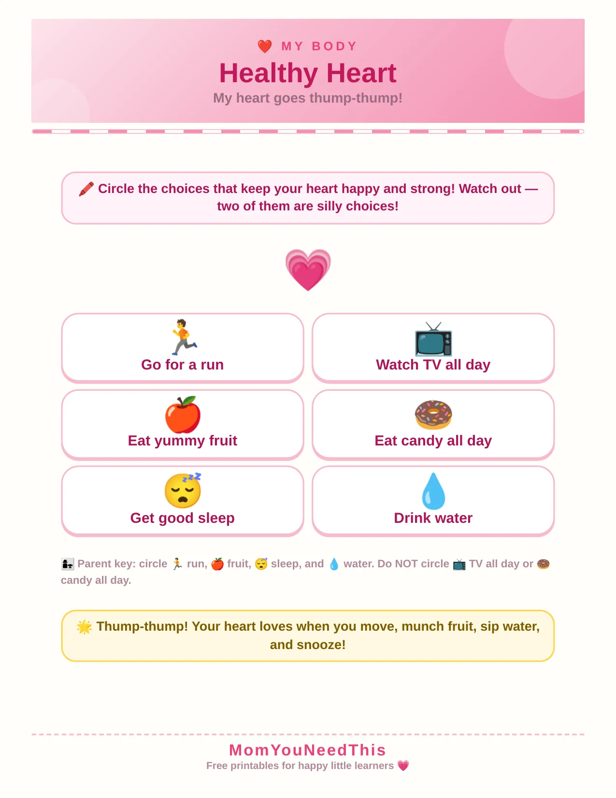

❤️ The Heart Activities Your Amazing Beating Heart
Thump-thump, thump-thump. The heart never stops working for you. These sweet activities help children find their heartbeat and learn what this mighty muscle does.
Quick Answer
This free printable heart activity helps toddlers and preschoolers (ages 2–5) learn what the heart does: it is a muscle about the size of your fist that pumps blood to every corner of the body, beating around 100,000 times a day — faster when you run, slower when you sleep. Kids feel their own heartbeat, learn what the heart does, and discover habits that keep hearts healthy. Download and print at home with no signup needed.
At a Glance
- Ages: Toddlers and preschoolers (ages 2–5)
- Activity: Feeling your heartbeat; learning what the heart does
- Skills: Body science and healthy habits
- Format: Printable worksheet (PDF)
- Cost: Free, no signup
The heart is the one organ a child can investigate with no equipment at all: two fingers on a wrist, a hand flat on a chest. This page builds on that thump — what it is, why it speeds up after jumping jacks, and why it never once stops, not even in the middle of the night.
❤️ Explore The Heart Activities
Feel your heartbeat, learn what the heart does, and discover habits that keep hearts healthy.
💡 How To Use This Activity
Print the heart pages, then find the real thing: fingers on a wrist, or a hand flat on the chest. Do ten jumping jacks, feel it again, and compare. That before-and-after thump teaches more than any diagram — finish by drawing what the heartbeat sounds like. The print button opens the full-size page in a new tab if you prefer to print from there.

🖨️ Download Your Free The Heart Activities Printable
Feel your heartbeat, learn what the heart does, and discover habits that keep hearts healthy. Print it out, grab the crayons, and you're ready — no signup needed.
⬇️ Download Free Printable 🖨️ Print🎁 Free printable for toddlers & preschoolers
❤️ Your Heart, By The Numbers
Size: about as big as your own fist — hold up a fist and that is the scale. It sits in the middle of the chest, tipped slightly left, protected behind the ribs like a treasure in a cage.
Beats: around 100,000 times every day, and over three billion times in a long life — without a single rest, repair break or day off. A preschooler's resting heart beats roughly 80–120 times a minute, faster than a grown-up's, because small bodies run their systems at higher speed.
Its job: the heart is a pump with one delivery route — the blood vessels, a network so long that, laid end to end, a child's would circle the Earth more than twice. Blood carries oxygen and food to every cell and carries the waste away; the heart's beating is the delivery service running.
Why it races: when your child runs, their muscles order more oxygen, and the heart answers by pumping faster and harder — that pounding after jumping jacks is the heart doing overtime on request. It slows again within minutes. Feeling that before-and-after change is the whole physiology lesson, available free on any wrist.
❓ The Heart Activities FAQs
What activities are included in The Heart Activities?
This page collects our free heart printables in one place: feeling your heartbeat and taking a pulse, learning what the heart does (pumping blood everywhere, about 100,000 beats a day), and discovering habits that keep hearts healthy — moving, sleeping, and eating well. Download the printable below and start learning right away.
Are these activities really free?
Yes — every printable on MomYouNeedThis is 100% free to download and print. No signup, no payment, just tap the download button. No supplies are needed beyond two fingers for a wrist — the heart itself provides the demonstration. No supplies are needed beyond two fingers for a wrist — the heart itself provides the demonstration.
How do I use these activities with my child?
Print the heart pages, then find the real thing: fingers on a wrist, or a hand flat on the chest. Do ten jumping jacks, feel it again, and compare — resting thump versus racing thump. That before-and-after teaches more than any diagram. Try it again after a quiet story to feel it settle: the heart answers activity, and children can measure the answer themselves.